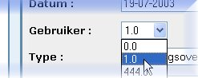

Running a JAG-generated applicationOnce JAG has finished its work, there are three simple steps to get your generated J2EE application up and running:1: Build the application
BUILD FAILED at the end of the Ant build output), you will
have to closely check the Ant build output for instructions. It is possible, for example, that you may have to set a
system environment variable or add a system-specific parameter to a configuration file. In most cases the instructions
will be clearly indicated in the build output.
2: Deploy the applicationThis is also done from the same directory: either from the command line by typing the command "ant deploy",
or from Windows Explorer by double-clicking the "deploy.bat" icon.
If it isn't already running, you must start up your application server at this point. The different application generation templates
create J2EE applications for different application servers, so this step depends on which application server you are using. For example,
to start up JBoss you shuld execute the 3: Use the applicationTo start using the application, navigate your web browser to
For example, for a JBoss application server running on default port 8080 and an application named "testapp", the URL would be:
The web application that is generated is naturally limited in scope, as it is intended to serve as a basis for further project development. Every entity within the application - provided it has been added to a service bean - will be accessible through the web application. By default the basic 'CRUD' (CReate, Update, Delete) functionality is available for a given entity, as well as the ability to view navigatable lists of entities. The generated web application offers the user the following features:
|